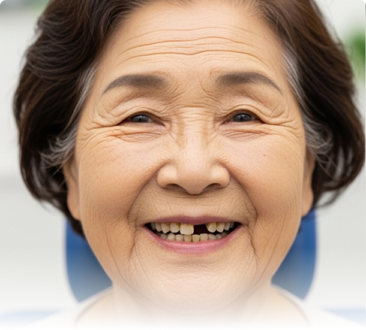
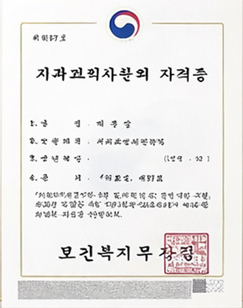
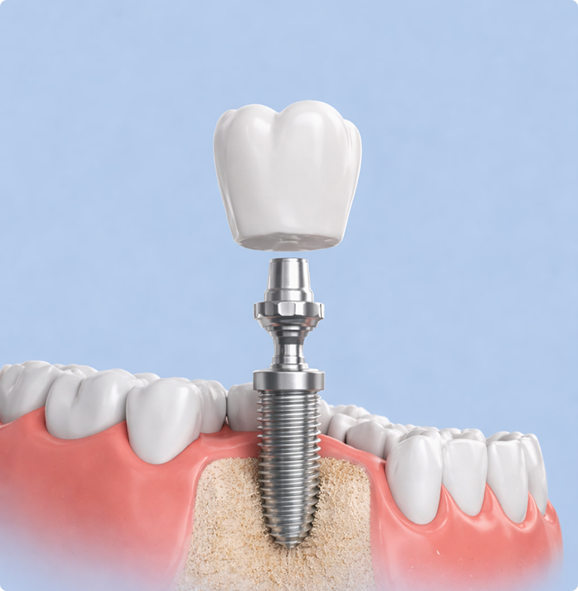
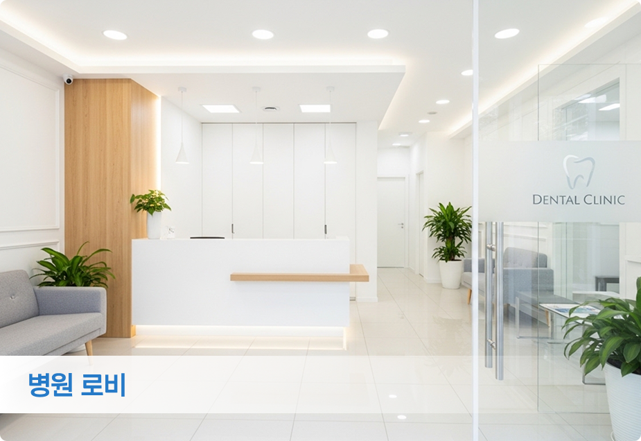
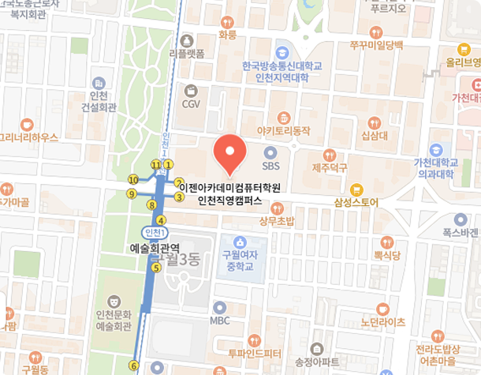

정밀 진단 시스템으로 더 안전하고
오래가는 임플란트 치료
임플란트 치료가 필요한 환자분들께
풍부한 임상 경험과 전문 지식을 바탕으로
대표원장이 직접 진단부터 식립까지 책임집니다.

환자의 치아 건강을 오래 지킬 수 있도록
데일리 치과가 중요하게 생각하는 진료 가치입니다.
예방 중심 진료
건강한 치아를 오래 유지할 수 있도록
예방과 관리 중심의 진료를 제공합니다.
연중무휴 · 야간진료
바쁜 일상 속에서도 언제든 편하게
방문할 수 있는 진료 환경을
제공합니다.
환자 중심 진료
환자의 입장에서 생각하고 이해하기
쉬운 설명과 진료를 지향합니다.
맞춤 안심 진료
개인에게 가장 적합한 치료 방법과
진료 계획을 제안합니다.
서울대학교 치과대학 졸업
보건복지부 인증 치과교정과 전문의
이화여자대학교 목동병원 인턴, 레지던트 수료
이화여자대학교 목동병원 외래교수

3D CT 기반 디지털 분석으로
정확한 위치에 안전하게 식립합니다.
환자분의 상태에 맞춘 맞춤 치료로
자연스러운 미소를 되찾아 드립니다.
같은 환자분의 실제 치료 사례입니다.
치아 상태와 치료 방법에 따라 결과는 달라질 수 있습니다.
같은 환자분의 실제 치료 사례입니다.
치아 상태와 치료 방법에 따라 결과는 달라질 수 있습니다.
저희 치과는 정밀한 진단과 안전한 치료를 위해
최신 디지털 장비를 적극적으로 도입
하고 있습니다.
임플란트 진단 및 시술 과정을
고해상도로 정밀하게 구현합니다.
장시간 임플란트 수술에도 안정적이고 편안한
진료환경을 제공합니다.
턱뼈 구조와 신경 위치까지 정밀분석하여
안전한 임플란트 식립을 돕습니다.
환자의 구강 상태를 면밀히 관찰해
놓치는 부분 없이 스캔합니다.
최소 절개로 통증과 출혈을 줄이는
정밀 임플란트 수술 장비

아래 내용을 입력하신뒤 제출해주시면
빠른 시일 내에 상담, 예약 안내를 도와드리겠습니다.
개인정보 처리방침에 동의합니다.
인천 남동구 인주대로 593,
엔타스빌딩 12층
* 내부 주차 가능합니다.
전화상담
E-mail: DailyDT@email.com
진료시간
평일
주말
공휴일
10:00 - 21:00
10:00 - 18:00
12:00 - 16:00
